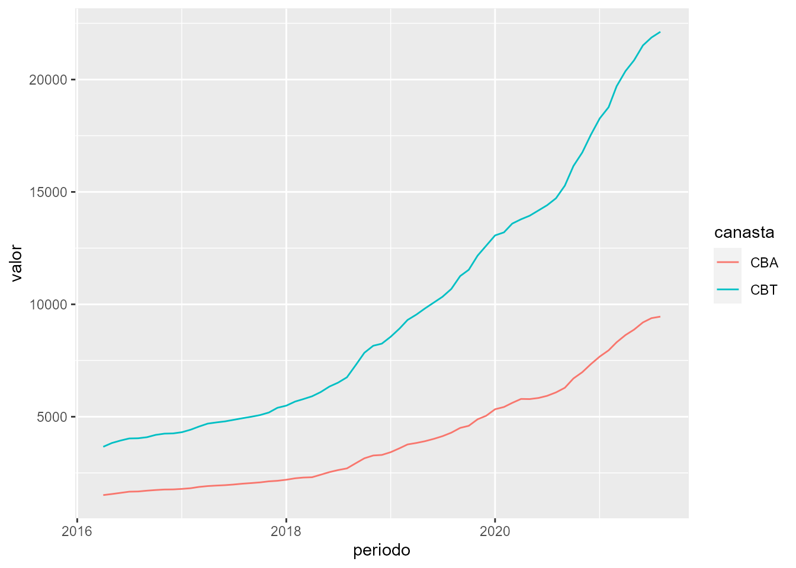

eph
vignettes/eph.Rmd
eph.RmdEl paquete eph tiene como objetivo facilitar el trabajo de les usuaries que trabajen con los microdatos de la Encuesta Permanente de Hogares. Este tutorial busca ejemplificar un pipeline de trabajo más o menos típico para mostrar el uso de las funciones del paquete.
Para instalar la versión estable del paquete usar:
install.packages('eph')
Para la versión en desarrollo:
# install.packages('devtools') si no tiene instalado devtools devtools::install_github("holatam/eph")
get_microdata()
Obtengamos la base de microdatos de individuos para el tercer trimestre de 2018:
ind_3_18 <- get_microdata(year=2018, trimester=2, type='individual')
Puede verse que la función requiere tres argumentos básicos:
year: entero con el año de la encuesta que se desea descargartrimester: entero con el trimestre (este argumento es válido para la EPH continua, 2004-actualidad)type: character "individual", para descargar la base de invidividuos y "hogar", para la de hogar.Si se deseara descargar una base de la EPH puntual, será necesario reemplazar el argumento trimester por wave que define la onda de la EPH puntual que se desea descargar. Por ejemplo, si se buscara descargar la base individual de la segunda onda del año 2002, debería escribirse
ind_2_02 <- get_microdata(year=2001, wave=2, type='individual')
organize_labels()
Es posible etiquetar de forma automática el dataset llamando a la función organize_labels():
ind_3_18 <- organize_labels(df=ind_3_18, type='individual')
La función toma dos argumentos:
df: el data.frame que se quiere etiquetar, debe ser producto de get_microdata()
type: string; cuál es el tipo de datatset que se quiere etiquetar, "individual" o "hogar"
Descarguemos y etiquetemos la base de hogares del 3 trimestre de 2018. Podemos hacer uso de los %>% pipes de magritte:
hog_3_18 <- get_microdata(year=2018, trimester=3, type='hogar') %>% organize_labels(., type='hogar')
calculate_tabulates()
Una de las operaciones más usuales al trabajar con la EPH son los tabulados uni y bivariados. Para ello, el paquete cuenta con la función calculate_tabulates(), la cual brinda la posibilidad de obtener tanto resultados en valores absolutos como relativos, como así también contar con la posibilidad de ponderar los datos:
calculate_tabulates(base=ind_3_18, x='ESTADO', y='CH04', weights = 'PONDIH', add.totals='row', add.percentage='col') #> ESTADO/CH04 #> Entrevista individual no realizada (no respuesta al cuestionario individual) #> Ocupado #> Desocupado #> Inactivo #> Menor de 10 anios. #> Total #> Varon Mujer #> 0.0 0.0 #> 49.0 35.4 #> 4.7 4.3 #> 30.3 46.7 #> 16.0 13.6 #> 100.0 100.0
Los argumentos principales de la función son:
base: un data.frame proveniente de get_microdata()
x: string con el nombre de la variable a tabulary: otro string (opcional) con el nombre de una segunda variable, para una tabla de doble entrada. Tiene que ser de igual largo que x
weights: string con el nombre de la variable que contiene los pesosadd.totals: agrega valores por row, col o both
add.percentage: calcula porcentajes por row, col o both
Así, si quisiéramos la misma tabla sin ponderar:
calculate_tabulates(base=ind_3_18, x='ESTADO', y='CH04', add.totals='row', add.percentage='col') #> ESTADO/CH04 #> Entrevista individual no realizada (no respuesta al cuestionario individual) #> Ocupado #> Desocupado #> Inactivo #> Menor de 10 anios. #> Total #> Varon Mujer #> 0.1 0.1 #> 48.5 34.0 #> 3.6 3.3 #> 32.0 48.8 #> 15.9 13.8 #> 100.0 100.0
organize_panels()
Otra potencialidad del trabajo con microdatos de la EPH es la capacidad de generar un pool de observaciones de panel. Este procedimiento consta en identificar a una misma persona u hogar encuestado en distintos trimestres, y permite realizar estudios sobre la evolución de sus caracteristicas con el correr del tiempo. Esto puede generarse, para las bases individuales en eph con la función organize_panels(). Para ello es necesario contar previamente con las múltiples bases de datos que se deseen poolear.
bases <- get_microdata(year=2018, trimester=1:4, type='individual', vars = c('CODUSU','NRO_HOGAR','COMPONENTE','ANO4','TRIMESTRE','CH04','CH06', #variables necesarias para hacer el panel 'ESTADO','PONDERA') ) #variables que nos interesan en nuestro análisis bases #> Warning: `...` is not empty. #> #> We detected these problematic arguments: #> * `needs_dots` #> #> These dots only exist to allow future extensions and should be empty. #> Did you misspecify an argument? #> # A tibble: 4 x 5 #> year trimester wave type microdata #> <dbl> <int> <lgl> <fct> <list> #> 1 2018 1 NA individual <tibble [57,951 × 9]> #> 2 2018 2 NA individual <tibble [57,835 × 9]> #> 3 2018 3 NA individual <tibble [56,879 × 9]> #> 4 2018 4 NA individual <tibble [57,418 × 9]>
pool <- organize_panels(bases=bases$microdata, variables=c('ESTADO','PONDERA'), window='trimestral')
Los argumentos principales de la función organize_panelsson:
bases: una lista con las bases de datos a poolearvariables: string con los nombre de la variables de interéswindow: un string que indique la ventana de distancia de las observaciones (anual) o (trimestral)pool #> Warning: `...` is not empty. #> #> We detected these problematic arguments: #> * `needs_dots` #> #> These dots only exist to allow future extensions and should be empty. #> Did you misspecify an argument? #> # A tibble: 75,308 x 17 #> CODUSU NRO_HOGAR COMPONENTE ANO4 TRIMESTRE CH04 CH06 ESTADO PONDERA #> <fct> <int> <int> <int> <int> <int> <int> <int> <int> #> 1 TQRMN… 1 1 2018 1 2 67 3 1008 #> 2 TQRMN… 1 2 2018 1 1 81 1 1008 #> 3 TQRMN… 1 3 2018 1 2 22 2 1008 #> 4 TQRMN… 1 1 2018 1 1 62 1 886 #> 5 TQRMN… 1 1 2018 1 1 83 3 594 #> 6 TQRMN… 1 2 2018 1 2 79 3 594 #> 7 TQRMN… 1 1 2018 1 2 79 3 700 #> 8 TQRMN… 1 1 2018 1 1 38 1 700 #> 9 TQRMN… 1 2 2018 1 2 33 1 700 #> 10 TQRMN… 1 1 2018 1 1 64 1 546 #> # … with 75,298 more rows, and 8 more variables: Periodo <yearqtr>, #> # ANO4_t1 <int>, TRIMESTRE_t1 <int>, CH04_t1 <int>, CH06_t1 <int>, #> # ESTADO_t1 <int>, PONDERA_t1 <int>, consistencia <lgl>
La función nos devuelve un data.frame similar a la base original, en el cual cada fila es un registro individual, que consta de las observaciones de las variables de interés específicadas, en dos periodos de tiempo. En el período inicial las mismas conservan su nombre, y en el siguiente (año o trimestre) aparecen renombradas con el agregado del string _t1.
Lo que hace la función detrás de bambalinas es concatenar todas las bases espeficadas en el argumento list= y hacer un join, conservando sólo aquellos individuos encuestados en los diferentes trimestres. La columna consistencia evalúa si entre ambas observaciones un mismo individuo figura con distinto sexo o con una difrencia absoluta de 2 años de edad.
pool %>% organize_labels(.) %>% calculate_tabulates(x='ESTADO', y='ESTADO_t1', weights = "PONDERA", add.percentage='row') #> ESTADO/ESTADO_t1 1 2 3 4 #> Ocupado 89.0 3.7 7.3 0.0 #> Desocupado 36.2 34.8 29.0 0.0 #> Inactivo 7.6 3.2 88.9 0.3 #> Menor de 10 anios. 0.0 0.0 3.8 96.2
Un indicador frecuente construido con esta infomación es la Matriz de Transición. Ella refleja como los individuos que ocupaban una determinada categoría en el período inicial, se distribuyen en cada una de las categorías en el período siguiente. La misma puede construirse sencillamente utilizando la función calculate_tabulates. En este ejemplo, la información refleja que durante 2018, un 3.7% de los ocupados perdió su empleo en el trimestre siguiente.
Dado que levantar muchas bases al mismo tiempo puede superar el espacio disponible en memoria, es posible utilizar el parametro vars para hacer una selección de variables al mismo tiempo que se levantan las bases.
df <- get_microdata(year = 2017:2018, trimester = 1:2,type = 'individual', vars = c('PONDERA','ESTADO','CAT_OCUP')) %>% unnest() df %>% sample_n(5) #> # A tibble: 5 x 7 #> year trimester wave type PONDERA ESTADO CAT_OCUP #> <int> <int> <lgl> <fct> <int> <int> <int> #> 1 2017 2 NA individual 218 4 0 #> 2 2018 2 NA individual 198 4 0 #> 3 2017 1 NA individual 126 2 0 #> 4 2018 1 NA individual 257 3 0 #> 5 2017 1 NA individual 2712 2 3
Con estos datos podemos crear por ejemplo la serie de asalarización
\(SO_{t} = \frac{\sum_{i=1}^n w_{i}TCP_{i}}{\sum_{i=1}^n w_{i}OCUP_{i}}\)
df <- df %>% group_by(year,trimester) %>% summarise(indicador = sum(PONDERA[CAT_OCUP==3 & ESTADO==1], na.rm = T) / sum(PONDERA[ESTADO==1], na.rm = T)) #> `summarise()` regrouping by 'year' (override with `.groups` argument) df #> Warning: `...` is not empty. #> #> We detected these problematic arguments: #> * `needs_dots` #> #> These dots only exist to allow future extensions and should be empty. #> Did you misspecify an argument? #> # A tibble: 4 x 3 #> # Groups: year [2] #> year trimester indicador #> <int> <int> <dbl> #> 1 2017 1 0.742 #> 2 2017 2 0.751 #> 3 2018 1 0.752 #> 4 2018 2 0.740
Un objetivo del paquete eph, es lograr automatizar el cálculo de pobreza e indigencia del INDEC para las bases trimestrales1. El gran problema es que no existe información publicada fuera de los informes de prensa en formato pdf sobre los valores de las canastas básicas y alimentarias.
No obstante, hemos desarrollado dos funciones que, de encontrarse disponibles dichos datos, podrían calcular de forma automática los valores de pobreza e indigencia. Mostraremos un ejemplo de juguete con dos datasets de la CABA y sus respectivos valores de canastas.
bases <- dplyr::bind_rows(toybase_individual_2016_03,toybase_individual_2016_04)
Existen dos funciones núcleo:
lineas <- get_poverty_lines() lineas %>% head() #> Warning: `...` is not empty. #> #> We detected these problematic arguments: #> * `needs_dots` #> #> These dots only exist to allow future extensions and should be empty. #> Did you misspecify an argument? #> # A tibble: 6 x 4 #> periodo CBA ICE CBT #> <dttm> <dbl> <dbl> <dbl> #> 1 2016-04-01 00:00:00 1515. 2.42 3664. #> 2 2016-05-01 00:00:00 1561. 2.45 3831. #> 3 2016-06-01 00:00:00 1614. 2.44 3943. #> 4 2016-07-01 00:00:00 1666. 2.42 4034. #> 5 2016-08-01 00:00:00 1675. 2.41 4042. #> 6 2016-09-01 00:00:00 1711. 2.39 4090.
Esta función descarga los valores de las canastas alimentaria, básica (CBA y CBT) y la inversa del coeficiente de Engels… perdón, Engel (ICE) de la serie provista por INDEC. Esta es la serie para GBA, y es la que publica regularmente INDEC.
lineas %>% select(-ICE) %>% gather(canasta, valor, -periodo) %>% ggplot() + geom_line(aes(x=periodo, y=valor, col=canasta))

Para el calculo de la Pobreza e Indigence se utilizan canastas regionales, que sólo aparecen en los informes Técnicos.
A modo de ejemplo, en la librería eph se encuentra la base canastas_reg_example con la información necesaria para realizar el cálculo
canastas_reg_example %>% head() #> Warning: `...` is not empty. #> #> We detected these problematic arguments: #> * `needs_dots` #> #> These dots only exist to allow future extensions and should be empty. #> Did you misspecify an argument? #> # A tibble: 6 x 5 #> region periodo CBA CBT codigo #> <chr> <chr> <dbl> <dbl> <dbl> #> 1 Cuyo 2016.3 1509. 3872. 42 #> 2 Cuyo 2016.4 1570. 4030. 42 #> 3 GBA 2016.3 1684. 4053. 1 #> 4 GBA 2016.4 1756. 4232. 1 #> 5 Noreste 2016.3 1513. 3414. 41 #> 6 Noreste 2016.4 1568. 3539. 41
A su vez, también se encuentra la tabla de adulto_equivalente que permite construir la cantidad de adultos equivalentes a nivel hogar, para multiplicar al mismo por la canasta regional correspondiente, a fin de definir la línea a nivel hogar.
adulto_equivalente %>% head() #> CH04 CH06 adequi #> 1 1 -1 0.35 #> 2 1 1 0.37 #> 3 1 2 0.46 #> 4 1 3 0.51 #> 5 1 4 0.55 #> 6 1 5 0.60
La función calculate_poverty calcula la pertenencia a situaciones de pobreza e indigencia a nivel de los individuos siguiendo la metodología de línea:
bases <- dplyr::bind_rows(toybase_individual_2016_03,toybase_individual_2016_04) base_pobreza <- calculate_poverty(base = bases, basket = canastas_reg_example,print_summary=TRUE) #> # A tibble: 2 x 4 #> # Groups: ANO4 [1] #> ANO4 TRIMESTRE Tasa_pobreza Tasa_indigencia #> <int> <int> <dbl> <dbl> #> 1 2016 3 0.0296 0.0136 #> 2 2016 4 0.0324 0.0122
base_pobreza %>% select(CODUSU,ITF,region,adequi_hogar,CBA_hogar,CBT_hogar,situacion) %>% sample_n(10) #> Warning: `...` is not empty. #> #> We detected these problematic arguments: #> * `needs_dots` #> #> These dots only exist to allow future extensions and should be empty. #> Did you misspecify an argument? #> # A tibble: 10 x 7 #> CODUSU ITF region adequi_hogar CBA_hogar CBT_hogar situacion #> <fct> <int> <chr> <dbl> <dbl> <dbl> <chr> #> 1 TQSMNOQSUHKNLMCDEFP… 90000 Patago… 0.66 1197. 3275. no_pobre #> 2 TQRMNORUYHMOKMCDEGJ… 18400 Pampea… 1.67 2916. 7029. no_pobre #> 3 TQRMNOPTSHMLKNCDEHJ… 28800 Noroes… 1.02 1556. 3480. no_pobre #> 4 TQRMNOQTUHLLKMCDEFJ… 17500 Pampea… 0.76 1327. 3199. no_pobre #> 5 TQRMNOPWSHLOKTCDEHI… 9940 Noroes… 1.02 1556. 3480. no_pobre #> 6 TQRMNOPUSHMNLUCDEIK… 0 Pampea… 0.77 1345. 3241. <NA> #> 7 TQRMNORXUHLKMSCDEII… 58000 GBA 1 1684. 4053. no_pobre #> 8 TQRMNOQSVHJLLLCDEIO… 0 Pampea… 0.76 1327. 3199. <NA> #> 9 TQRMNORQTHMLLRCDEFK… 16500 Pampea… 0.83 1450. 3493. no_pobre #> 10 TQRMNORQRHKMKPCDEFL… 14000 Pampea… 1 1676. 4034. no_pobre
El calculo oficial se realiza sobre bases semestrales no publicadas↩